![]()
| Parameter | Label | Condition | Response | Accuracy | Fixed |
|---|---|---|---|---|---|
| Condition = training condition (Learned vs. Novel); Response = key-press response (same vs. different); Accuracy = (true/correct vs false/incorrect); SD = standard deviation. | |||||
| Start point | A | no | no | no | - |
| Mean drift rate | v | yes | no | yes | - |
| SD drift rate | sd_v | no | no | yes | - |
| SD false drift rate | false.sd_v | - | - | - | 1 |
| Threshold | b | no | yes | no | - |
| Non-decision time | t0 | no | no | no | - |
Title: Pupil stuff
Keywords
face perception, pupillometry, familiarity, decision models, evidence accumulation modelling, joint-modelling
1 Introduction
Over the last two decades, pupillometry has become an increasingly popular tool for accessing cognitive processing non-invasively and with high temporal resolution. Pupil size has been linked to a range of cognitive processes, including attention (Binda et al. 2014; Naber et al. 2013; Wang and Munoz 2015), emotional arousal (Bradley et al. 2008), decision-making (Murphy et al. 2014; Urai et al. 2017), and recognition memory (Goldinger and Papesh 2012; Otero et al. 2011). In recognition memory specifically, a well-documented pattern is the “pupil old/new effect”: greater pupil dilation for the correct recognition of “old” items than for the correct rejection of “new” items, taken to reflect an association between pupil dynamics and memory strength (Otero et al. 2011; Võ et al. 2008; see Lapteva and Martarelli 2024, for a meta-analysis). In this study, we propose a computational approach to investigating the association between face recognition memory and pupil dynamics. Rather than relying solely on response accuracy, we argue that modelling the full distribution of response times for both correct and incorrect responses provides a more detailed characterization of these associations.
The pupil old/new effect is a well-documented observation in recognition memory experiments using pupillometry. It refers to a larger pupil dilation for correctly recognised “old” stimuli than for correctly rejected “new” stimuli [Võ et al. (2008); Heaver and Hutton (2011). This difference has been proposed to index the strength of the memory trace (Otero et al. 2011), and it is larger when recognition relies on recollection rather than familiarity (Kafkas and Montaldi 2015; Taikh and Bodner 2022). The effect also extends to false memories. New items wrongly judged “old” elicit larger dilation than correct rejections, though smaller than hits (Otero et al. 2011; Montefinese et al. 2013; Brocher and Graf 2016). This suggests that the participant’s subjective judgement of a stimulus as “old” is enough to evoke a stronger pupillary response, regardless of accuracy. Two main explanations have been offered. Early accounts attributed the effect to the greater cognitive effort involved in retrieving an episodic memory (Võ et al. 2008; Goldinger and Papesh 2012). More recent work instead proposes that recognition acts as a salient signal that triggers an attentional orienting response, because the effect grows when recognition is unexpected (Mill et al. 2016).
Pupillometric studies of face recognition remain scarce, but several findings suggest that pupil size is sensitive to face memory. When faces are learned during an experiment, prior exposure modulates pupil responses at test, and these effects appear for both own- and other-race faces (Goldinger et al. 2009; Wu et al. 2012). Pupil dilation during encoding also predicts later recognition of faces (Cronin et al. 2023). In eyewitness lineups, participants who correctly identify the culprit show larger pupils for the target than for fillers, sometimes even when they are unsure of their choice, which points to covert recognition (Elphick et al. 2020). Pre-experimentally familiar faces produce a similar pattern: familiar faces reduce the initial constriction and increase dilation relative to unknown faces, most strongly for one’s own face (Schwetlick et al. 2025). This familiarity response survives perceptual suppression that abolishes overt recognition (Mejía et al. 2024) and appears for personally familiar faces presented in rapid serial streams (Chen et al. 2026). However, not all studies agree. One study found smaller dilations for more familiar faces, but only during an active task, suggesting that task demands shape the direction of the effect (Matyjek et al. 2021).
Paragraph 4: Computational approach Furthermore, the pupil old/new effect has typically been examined by sorting pupil responses according to response accuracy (hits, misses, false alarms and correct rejections). This approach overlooks a second, equally informative aspect of performance: response times. Considering accuracy or response times in isolation can lead to misleading conclusions about the underlying cognitive processes. For example, older adults are slower than younger adults in recognition memory but almost equally accurate, and modelling both measures jointly showed that this slowing reflected more cautious responding and slower non-decisional processing rather than weaker memory evidence (Ratcliff et al. 2004). Evidence-accumulation models offer a principled solution to this problem (Ratcliff 1978; Brown and Heathcote 2008). They assume that decisions arise from the noisy accumulation of evidence until a response threshold is reached, and they decompose choices and full response time distributions into latent components: the rate of evidence accumulation (drift rate), the amount of evidence required to respond (threshold), response bias, and non-decision time (see Figure 1). Linking pupil size to these parameters, rather than to raw accuracy categories, can therefore specify which decision process pupil dilation reflects. Previous work has already related pupil dilation to decision thresholds (Cavanagh et al. 2014), to reduced choice bias in evidence accumulation Gee et al. (2017), including in memory-based decisions (Gee et al. 2020), and to urgency signals (Murphy et al. 2016).
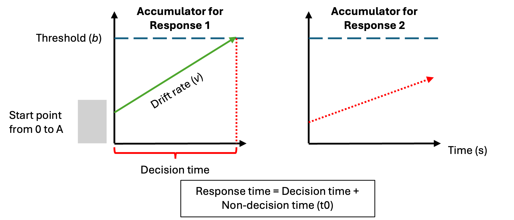
This diagram represents the accumulation process one trial of a perceptual decision task for the linear ballistic accumulator (LBA; Brown and Heathcote (2008)). Participants are required to chose between two options (Response 1 and Response 2). In a LBA model, there is a separated accumulation of evidence (v) for each response option. In this example, the correct response is Response 1. The accumulator on the left is the accumulator for the correct response (Response 1), and the green line in represents the rate at which the evidence accumulates in favor of that response option. The accumulator on the right is the accumulator for the incorrect response (Response 2), and the dash red line represents the rate at which the evidence accumulates in favor of this response option. Once the accumulated evidence crosses the threshold (b) of a response option, the corresponding response is chosen (in this case Response 1).
Paragraph 5: In the present study, therefore, we combined pupillometry with computational models to investigate how latent computational processes in face recognition are related to pupil size dynamics. We previously investigated the extent to which drift rate and threshold are associated with pupil size dynamics for old (learned) and new (novel) faces (Fournier et al. 2026). Using an old/new recognition task in combination with evidence accumulation modelling to study how familiarity impacts the computational processes that support face recognition, we found that different types of familiarity (visually familiar faces vs. famous faces) had a similar impact on the computational processes involved in the decision-making process of face recognition. Compared to learned faces, novel faces induced a greater accumulation of evidence (drift rate), as well as modest increase in response caution (threshold). Using these results as a baseline, we want to replicate these findings and use a combination of correlationnal approaches to estimate the associations between drift rate/threshold with pupil size.
Paragraph 6: Joint modelling Beyond estimating post hoc associations between our parameters of interest and pupil metrics, we also fit a joint model linking the behavioural and pupil data directly. Joint modelling offers a way to combine multiple data streams, such as choice/RT data and physiological measures, within a single estimation framework, rather than analyzing each in isolation and relating them afterwards (Turner et al. 2013, 2017, 2019) . Unlike post hoc correlations, which treat each parameter’s point estimate as fixed and known, joint models estimate the relationship between data sources as part of the same generative process, so that measurement uncertainty in each parameter is propagated into the estimated association rather than discarded (Turner et al. 2015; Nunez et al. 2024). By jointly modelling behavioural (response time and accuracy) and pupil data within a single hierarchical framework, we sought to characterize the magnitude of pupil–behaviour relationships in a way that accounts for this shared uncertainty. It is important to stress that this analysis remains exploratory: our aim was to evaluate the feasibility of jointly modelling LBA and pupillometric data, and no substantive inferences are drawn from its results.
Based on previous literature, we expect that drift rate for learned (old) faces (the quality of the evidence accumulation for learned faces) to positively correlate with pupil size. Drift rate for novel (new) faces should show a positive but lesser association with pupil size (–> not sure about that). However it is less clear how threshold (response caution towards a response) would associate with pupil size.
2 Method and Materials
2.1 Pre-registration and open science
We report how we determined our sample size, all data exclusions (if any), all manipulations, and all measures in the study (Simons et al. 2017). The research question, hypotheses, experimental design, planned analysis, and exclusion criteria were preregistered (https://osf.io/yr2z6/overview). Raw data and analysis code are available on Github (link github).
2.2 Participants
All participants were recruited using either an online recruiting platform (https://marktplatz.uzhalumni.ch) or via a mailing list dedicated to students from the Department of Psychology of the University of Zurich. 34 participants completed the experiment. Following our preregistered exclusion criterion, 1 participant was excluded because their percentage of missed trials was higher than 40%, 1 was removed because the overall accuracy was lower than 55% and finally 1 participant was removed because the percentage of trials containing more that 20% of missing data during the baseline period or during the stimulus presentation was higher than 40%. In the end, data from 31 participants (17 men and 14 women) were retained for the analysis and the LBA modeling. Ages ranged from 19 to 61 (\(M_{age} =\) 26.5, \(SD_{age} =\) 8.8) and each participant received 25 CHF for the completion of the study. This experiment was accepted by the ethics committee of the Federal Institute of technology (ETH) Zurich.
2.3 Material
Stimuli were presented on a 24-inch monitor (1920 × 1200 px, 60 Hz refresh rate, Philips PHL 240P4QPY) at a viewing distance of approximately 65 cm. Stimulus presentation and response collection were implemented in Psychopy Builder R2024a (version -> check) running on a Linux operating system (Ubuntu 22.04.5 LTS). The code used for the experimental procedure can be found on OSF (link OSF). Pupil data for the left and right eye were recorded using a Tobii Pro Spark (Tobii AB) eye tracking device at a 60 Hz sampling rate and measured in mm. The eye tracking device was placed at the bottom of the desktop computer screen. The head of the participants was fixed using a chin rest, such that the distance between the eyes and the computer screen was the same for all participants (approximately 65 cm).
2.4 Procedure
The experimental procedure is similar to the one used by Fournier et al. (2026). The face recognition task was divided into two parts: a familiarization part and a recognition part (see Figure 2). In the familiarization part, participants were instructed to memorize the identity of unknown faces. One familiarization trial consisted of passively viewing 6 face images of the same identity presented one after the other but varying in viewing points (3/4 left view, frontal view and 3/4 right view) and the colorimetry (colorful image, gray scale image). Each image was presented for 0.75 second and participants underwent 30 familiarization trials. The faces presented during the familiarization part were considered the “Learned faces” within-subject condition.
In the recognition part, participants completed three blocks of 60 recognition trials, each block being separated from another by a short break. Half of the trials were “Learned” identities and the other half were “Novel”, previously unseen, identities. Each recognition trial was divided into three parts: a fixation cross, a scrambled image of a face and the gray scale image of the same face. During the fixation cross presentation, participants were told to look at the fixation cross in the middle of the screen. They were also instructed to blink during that time if they needed to and to avoid blinking after the fixation cross disappeared. During the scramble image presentation, participant were told to fixate the scramble image, and not to do anything else. Finally, during the face image presentation, participants were asked to choose if they had previously seen this person in the familiarization part or not. If they did, they should press the “q” key and if they did not, the “p” key. One important note is that participants never saw two pictures of the same learned identity in the same block and never the same picture (3/4 left view, frontal view and 3/4 right view) of a learned identity during the entire recognition part. Furthermore, each novel identity picture was only presented once during the recognition part. Response time [s] and accuracy were collected after each recognition trial. A response time limit of 2500 ms has been set for each recognition trial. If participants did not press a key before the response time limit, the trial was discarded from further analysis and not replaced. The experiment took place in a dim light testing room. We measured the illuminance from the chin rest pointing towards the lamps in the ceiling of the resting room (illuminance = 29.5 lux).
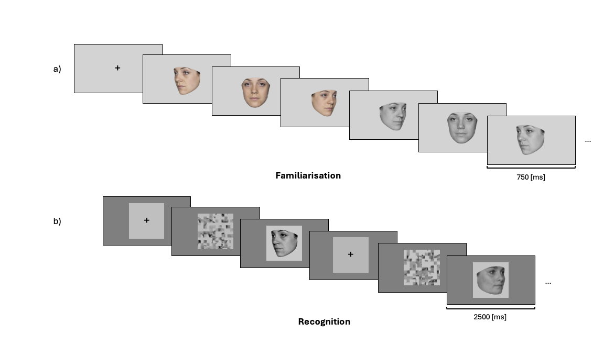
The experimental procedure was divided into two parts: a familiarization part and a recognition part. a) In the familiarization part, participants were asked to memorize the face identity of 30 identities. For each identity, participants looked at 6 pictures depicting the same identity with different face orientation (3/4 left view, frontal view and 3/4 right view) and different colorimetry (color and gray scale images) in the order presented here: 3/4 left view, frontal view and 3/4 right view in color, followed by 3/4 right view, frontal view and 3/4 left view in gray scale. b) In each trial of the recognition part, participants had to decided if they recognize the face shown on the screen from the familiarization part. If they did, they had to press the “q” key and if the did not, the “p” key. They completed three blocks of 60 trials (half of them were from the familiarization part, half were novel faces). For the recognition part, only gray scale images of faces were used (for both learned faces and novel faces).
2.5 Stimuli
The face images consisted of images selected from two different data sets: the Face Research Lab London Set ( https://doi.org/10.6084/m9.figshare.5047666.v5) and the Color FERET Database (https://www.nist.gov/itl/products-and-services/color-feret-database). Check images coming from both data sets. From each selected identity, three face pictures at different viewpoints (3/4 left view, frontal view, ¾ right view) were cropped following the outline of the face and grey scaled. To ensure that the stimuli used are reproducible, we used the webmorphR R Package (DeBruine 2022) to crop the face images. The code used to crop the images can be found on OSF (link OSF). The pictures obtained at this stage in the image processing pipeline were used in the familiarization part of the experimental task.
Since pupil size is highly sensitive to brightness and contrast changes between stimuli, we equated the average pixel values (as a measure of brightness) and the standard deviation of pixel values in order to match brightness and contrast (brightness = 30.33, contrast= 41.42; Mathôt and Vilotijević, “Methods in Cognitive Pupillometry.”). These images were then placed on a darker grey background covering the entire desktop screen. For the scrambled image described above, we used a custom Matlab code to scramble all the greyscale image of each face images. To ensure that there were no difference in brightness and contrast between the scrambled image and the face image, the same face image was used in each trial: first, the scrambled version of the image followed by the non-scrambled version of the image. The code used to scramble the face images can be found in OSF (link OSF).
To assess if there was important variation in the difference between the luminous flux coming from the stimuli and the illuminance of the room, we averaged the luminous flux from all the images which were matched in brightness and contrast. The average luminous flux coming from our stimuli was 29.01 cd/m2 (SD = 1.19 cd/m2), a reasonably similar value to the 29.5 lux obtained from the illuminance measurement (Mathôt and Vilotijević 2022).
2.6 Pupil preprocessing and pupil metrics
Pupil data was only collected during the recognition part of the experiment. Each participant underwent a 5-points calibration phase during the break in between the familiarization and the recognition part. Samples identified as blinks were set to NA. The blink window was extended by 75 ms on each side of the sample to remove partial blinks artifacts (i.e. lid drooping and reopening) that surrounds the “true” blink. Pupil samples that deviated more than 8 median absolute deviations from the median are set to NA. This preprocessing stage was run twice in sequence, where the second pass caught artefacts that were masked by larger ones in the first pass. Regarding NA samples, each trial was then evaluated separately for the baseline and the stimulus windows. A trial was discarded if more that 20% of the samples were NA in the baseline period (set to 200ms before the target onset) or in the stimulus period (from target onset to target offset; Mathôt and Vilotijević (2022)). The pupil data were then upsampled to a uniform time grid at 1000Hz sampling rate to ensure equally-spaces samples before interpolation and smoothing. Remaining NA samples were linearly interpolated. Finally, a zero-phase 4th-order Butterworth low-pass filter with a 6 Hz cutoff was applied to remove higher frequencies while keeping slower pupil responses. After interpolation, the pupil data was downsampled to 50 Hz to reduce the risk of autocorrelation in time-series analyses (Rij et al. 2019).
Pupil data was baseline corrected using a subtractive correction (Mathôt and Vilotijević 2022), meaning that we subtracted the mean pupil size of the 200ms period before the stimulus onset from every pupil size sample during the stimulus presentation, for both left and right pupil size. The left and right eye signals were then averaged sample-by-sample into a single mean pupil trace. We discarded the pupil data from the last 100ms of the stimulus presentation (from 2400 to 2500ms) to ensure data quality.
From the pupil traces, three different pupil metrics were extracted: the mean pupil size, the maximum pupil size and the rate of pupil change.
Mean pupil size: The mean pupil size reflected the average of the pupil size across the entire face presentation (from 0 to 2400ms) for each trial and each participant.
Maximum pupil size: We calculated the maximum pupil size deviation from baseline after stimulus onset. We isolated the minimum sample value in the baseline (200ms before stimulus onset) and the maximum sample value in the stimulus presentation (2400ms after stimulus onset) in each trial for each participant. Following previous studies (Brocher and Graf 2016; Kafkas and Montaldi 2015), we then average the value of the 3 preceding and 3 following samples from the two isolated sample values. For statistical analyses, we used the difference between the maximal pupil size during stimulus presentation and the minimal value during baseline.
Rate of pupil change: For each trial and participant, we calculated the first derivative of all the sample values from the stimulus onset or the stimulus offset (0-2400ms) in order to obtain the rate of pupil change. From this new time-series, we extracted the values of the samples 200ms before the behavioral response (response locked) and averaged them for each trial (Gee et al. 2020).
2.7 Evidence accumulation modeling
Model and priors specifications as well as the model estimation are identical to the ones described in Fournier et al. (2026). Specifications of the priors are described in Supplementary Materials.
2.7.1 Model specifications
A hierarchical LBA models was fit to the accuracy and response times of the face recognition task. The model specifications are outlined in our preregistration (Table 1). The LBA framework assumes a separate evidence accumulator for each response alternative, with potentially different parameter values. Accordingly, one accumulator corresponded to the “Learned” response and the other to the “Novel” response. Threshold was allowed to vary by participants’ response (Learned/Novel) and mean drift rate varied as a function of both stimulus type (Learned/Novel) and weather the accumulator corresponded to the correct response for that stimulus (TRUE vs. FALSE). For example, when a Learned stimulus was presented, the Learned accumulator was designed as TRUE, whereas the Novel accumulator was designed as FALSE. The difference in drift rate between the TRUE and FALSE accumulators reflects the quality of information supporting a decision, with larger differences indicating stronger and more discriminative evidence accumulation (Lewandowsky and Oberauer 2018). The standard deviation of the TRUE accumulator was allowed to vary according to accumulator match status, whereas the standard deviation of the FALSE accumulator was constrained to be constant to ensure model identifiability (Donkin et al. 2009). In the preregistered model, a single start-point parameter (A), and single non-decision time parameter (t0) were estimated. Alternative model specifications that permitted variation in these parameters are reported in the Supplementary Materials.
2.7.2 Model estimation
Bayesian model estimated was carried using the EMC2 R package (Stevenson et al. 2026). Priors were chosen to be weakly-informative, meaning that they have little influence on the estimation (for more details regarding the priors of each model, see Supplementary Materials). Two sampling steps were used to estimate the parameters. First, a separate estimation of the fixed effects for each participant was conducted. Parameter estimations were then used as the starting point for the full hierarchical parameter estimation.
2.7.3 Model fit
To ensure that the fit of our model can capture most of the main trends in the data, graphical summaries of the posterior predictions were examined. Convergence plots and posterior predictive checks can be found in Supplementary Materials.
2.8 Data analysis
2.8.1 Overview of the general analytical strategy
First, LBA parameters were estimated and distributions contrasts between conditions of interest were computed to ensure that we replicated the results found in Fournier et al. (2026). Second we used a Bayesian multilevel mixed model to compare pupil metrics (mean pupil size, maximum pupil size and rate of pupil change) between stimulus conditions (Learned vs Novel) and accuracy conditions (correct trials vs incorrect trials). To provide a complementary picture of the difference in pupil data between the conditions of interest, a general additive mixed model (GAMM; Rij et al. (2019)) was also fitted to the pupil data. Regarding the associations between pupil size metrics and LBA parameters, we used correlations and data visualizations to characterize the zero-order relationships between parameters of interest (drift rate and threshold) from the LBA model with pupil size metrics. A “classical” correlation approach to generate point estimates of the correlation value and present those alongside scatter plots, as well as a Bayesian plausible value correlation approach to estimate the uncertainty in the estimated correlation values. Finally, as an exploratory analysis, we fitted a joint-model between pupil size The details of the analysis plan were preregistered (https://osf.io/abpdy/overview) and more specific details are presented below.
2.8.2 LBA parameters
In order to make inference about the potential associations between LBA parameters and pupil size metrics, subject specific estimates and group estimates posterior distributions were computed. Group estimates were contrasted across conditions (learned vs novel) to establish that the basic experimental effect found in Fournier et al. (2026) is replicable at the group level. To summarize the distribution of parameters of interest, we report the median of the posterior distribution together with 95% quantile interval of the posterior distribution. Assessment of the associations between parameter estimates and pupil size metrics was pursued using subject specific estimates.
2.8.3 Pupil metrics
Pupil metrics (mean pupil size, maximum pupil size and rate of pupil change) were compared between response accuracy (correct vs. incorrect trials) and stimulus conditions (Learned vs. Novel). For each pupil metrics, a multilevel Bayesian model was fitted and the specificities of each model can be seen in Table 2.
| Pupil metrics | Condition | Formula |
|---|---|---|
| familiarity = face familiarity (Learned vs. Novel); accuracy = response accuracy (correct vs. incorrect) | ||
| Mean pupil size | familiarity:accuracy | Mean pupil size: 0 + familiarity:accuracy + (1|participant) |
| Maximum pupil size | familiarity:accuracy | Maximum pupil size: 0 + familiarity:accuracy + (1|participant) |
| Rate of pupil change | familiarity:accuracy | Rate of pupil change: 0 + familiarity:accuracy + (1|participant) |
2.8.4 General additive mixed model (GAMM)
2.8.5 Classical correlational analysis
To evaluate the associations between pupil size and LBA parameters, we calculated the median value of the subject-level posterior distribution of each of our parameter of interest and correlated this value with the three pupil metrics extracted from the pupil data time-series (mean pupil size, maximum pupil size and rate of pupil change) at the subject level. For the threshold parameter, we computed the median of the two threshold parameters (threshold for learned and novel responses). For the drift rate parameter, we computed the median of the median of the six drift rate parameters. Drift rate (TRUE) reflects the accumulation of evidence when the response was correct (accumulation of signal) whereas drift rate (FALSE) represents the accumulation of evidence when the response was incorrect (accumulation of noise). Drift rate (TRUE-FALSE) is the subtraction drift rate (TRUE) - drift rate (FALSE) and represent the signal to noise ratio provided by the stimulus. For each stimulus condition (learned and novel), the median drift rate (TRUE), drift rate (FALSE) and drift rate (TRUE-FALSE) was computed. All median values of these parameters posterior distribution were then correlated with the average of the pupil metrics for each corresponding conditions, for each subject. More specifically, Drift rate (TRUE) were correlated with pupil metrics for correct trials, Drift rate (FALSE) with pupil metrics for incorrect trials and finally Drift rate (TRUE-FALSE) with the difference in pupil metrics between correct and incorrect trials for each condition (ex: Drift rate (TRUE-FALSE) x (Mean pupil size (correct) - Mean pupil size (incorrect)). Regarding threshold we correlated pupil metrics in function of the response of the participant. The threshold learned parameter was correlates with pupil metrics when the response of the participant was “Learned”, and threshold novel parameter was correlates with pupil metrics when the response of the participant was “Novel”, without regard of the accuracy of the response.
2.8.6 Bayesian plausible value correlational analysis
In addition to the classical correlational analysis described above, we conducted a Bayesian plausible value correlation approach (Ly et al. 2017; Matzke et al. 2017). Instead of using point estimates (median value of each parameter’s posterior distribution), this approach allows the estimation of uncertainty in likely correlational values by correlating the parameter estimation from each sample (or “draw”) from the posterior distribution with the pupil metrics. A distribution of the plausible correlations between each parameter and the pupil metrics can then be obtained. These distributions can then be compared between stimuli conditions (Learned vs Novel). By summarising the posterior distribution of these correlation values, this approach naturally lends itself to estimates of the uncertainty of the estimated correlation values.
2.8.7 Joint modelling
As an exploratory analysis, we used the EMC2 R package to fit a hierarchical Bayesian model combining a Linear Ballistic Accumulator (LBA) model of response times and accuracy with a pupil component. In the LBA, drift rates varied by stimulus type (learned/novel) and accumulator match (match/mismatch), thresholds by response option, and start-point variability and non-decision time were estimated as single parameters, with the drift-rate variability of the mismatching accumulator fixed for identifiability. Mean baseline-corrected pupil size per trial was modeled with a Gaussian regression (via EMC2’s design_fmri function, used here as a generic GLM engine, without convolution) with one regressor per trial type (Learned_Correct, Learned_Incorrect, Novel_Correct, Novel_Incorrect). Behavioral and pupil parameters were estimated together, so that individual differences in both were drawn from a shared multivariate distribution. From the resulting subject-level posterior draws, we computed correlations between conditions of interest. In our case, we extracted the mean posterior draws for Drift rate Learned (TRUE-FALSE) and Novel (TRUE-FALSE) and correlated them with the posterior draws of the mean pupil size for the learned condition (Correct-Incorrect) and for the novel condition (Correct-Incorrect). The objective was to estimate if we could retrieve the correlations obtained in the point estimates correlations section as well as the ones obtained in the plausible values section. As mentioned, this analysis is exploratory and was intended as a proof of concept for a joint modelling pipeline of pupil and behavioral data. No inferences were made based on the correlations obtained trough the joint model.
2.8.8 Inferential criteria
To evaluate the different posterior distributions estimated from the data analysis, we used three complementary criteria: sign, size and precision (Cumming 2014; Kruschke and Liddell 2018; McElreath 2018). To address the sign (or direction) of the effect, we reported if the median value is positive or negative. Second, we evaluated the size or magnitude of the posterior distribution by considering the size of the median value as well as the extent to which lower or upper bounds of the 95% quantile interval approach zero (no relationship). For example, if the 95% quantile interval excluded zero, we would have been reasonably confident in our inference of a non-zero effect. Furthermore, we used the width of the 95% quantile intervals as an indicator of estimation precision. Whereas narrow estimates indicate precise estimates, wider intervals indicate substantial uncertainty about the estimated parameter value, which may warrant a more cautious interpretation.
Regarding plausible value correlations,
3 Results
3.1 LBA parameters
Threshold: Inspection of the posterior distributions shows that there is an effect of familiarity on the threshold parameter. The threshold parameter is higher for the Novel response compared to the Learned response.
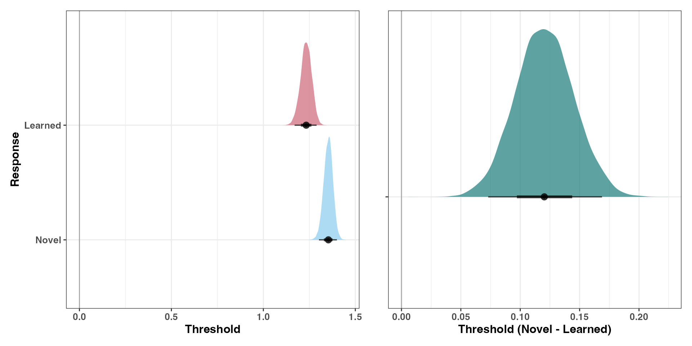
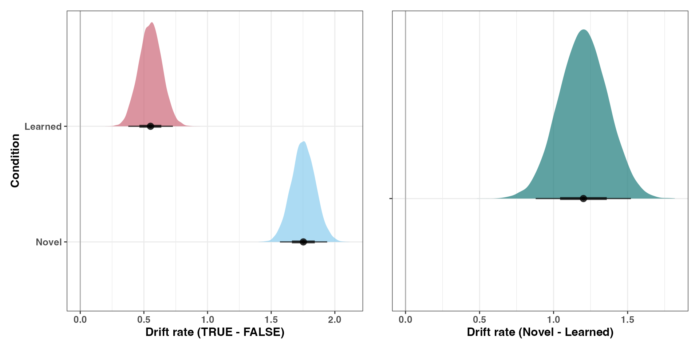
Drift rate: Inspection of the posterior distributions shows that there is a familiarity effect in drift rate difference. The quality of the evidence accumulation was greater for Novel faces compared to Learned faces.
| Parameter | Condition | Median | 95% QI |
|---|---|---|---|
| QI = quantile interval. | |||
| Threshold | Novel | 1.35 | [1.302, 1.4] |
| Threshold | Learned | 1.23 | [1.17, 1.29] |
| Threshold contrast | Novel - Learned | 0.12 | [0.073, 0.169] |
| Drift rate | Novel | 1.75 | [1.569, 1.94] |
| Drift rate | Learned | 0.55 | [0.378, 0.728] |
| Drift rate contrast | Novel - Learned | 1.2 | [0.879, 1.522] |
3.2 Pupil metrics
To estimate if the stimulus condition (Learned vs Novel) and/or the response accuracy (Correct vs Incorrect) had any effect on the different pupil metrics we fitted three Bayesian multilevel mixed model and report the posterior distributions, as well as the contrasts between stimulus conditions, accuracy and their interaction.Posterior contrasts for each pupil metric are reported in Table 4, and the estimated condition means are shown in Figure 4. All contrasts are expressed in standard deviation units, and evidence ratios and posterior probabilities refer to directional hypotheses (effect > 0).
Mean pupil size: Mean pupil size was larger for learned than for novel faces (b = 0.23, 95% CrI [0.02, 0.44], Evid.Ratio = 68.36, Post.Prob = .986). There was little evidence for a difference between correct and incorrect responses (b = 0.08, 95% CrI [−0.13, 0.30], Evid.Ratio = 3.47, Post.Prob = .776). The interaction between condition and accuracy was positive (b = 0.85, 95% CrI [0.43, 1.28], Evid.Ratio > 1000, Post.Prob > .999): the difference between correct and incorrect responses was larger for learned than for novel faces.
Peak pupil size: Peak pupil size showed the same pattern. Peak size was larger for learned than for novel faces (b = 0.20, 95% CrI [0.03, 0.37], Evid.Ratio = 85.96, Post.Prob = .989), with little evidence for an effect of accuracy (b = 0.04, 95% CrI [−0.13, 0.21], Evid.Ratio = 2.11, Post.Prob = .678). The interaction was positive and was the largest effect across the three metrics (b = 0.96, 95% CrI [0.61, 1.30], Evid.Ratio > 1000, Post.Prob > .999).
Pupil change rate: For pupil change rate, the rate was higher for learned than for novel faces (b = 0.25, 95% CrI [0.01, 0.48], Evid.Ratio = 49.42, Post.Prob = .980). The rate was also higher for correct than for incorrect responses (b = 0.21, 95% CrI [−0.02, 0.45], Evid.Ratio = 24.48, Post.Prob = .961), although the credible interval included zero. As for the other metrics, the interaction was positive (b = 0.75, 95% CrI [0.27, 1.23], Evid.Ratio = 570.43, Post.Prob = .998).
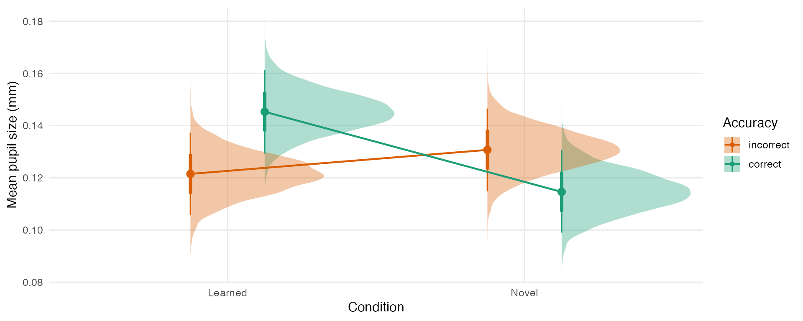
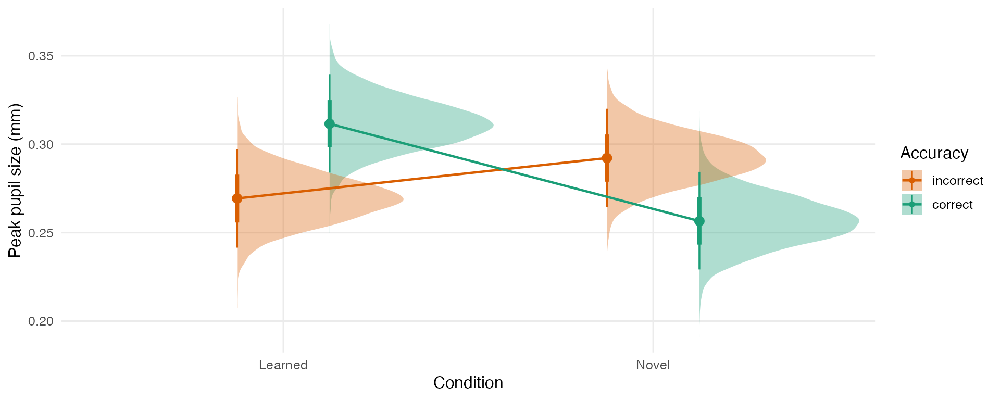
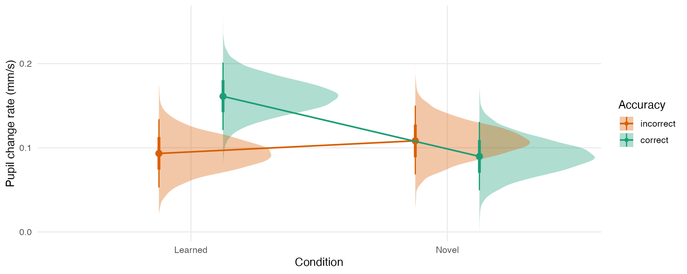
| Contrast | Estimate (SD units) | 95% CrI | Evid.Ratio | Post.Prob |
|---|---|---|---|---|
| CrI = credible interval; Evid.Ratio = P(effect > 0) / P(effect < 0); Post.Prob = P(effect > 0). | ||||
| Mean pupil size | Mean pupil size | Mean pupil size | Mean pupil size | Mean pupil size |
| Familiarity (Learned - Novel) | 0.23 | [0.02, 0.44] | 68.36 | 0.986 |
| Accuracy (Correct - Incorrect) | 0.08 | [-0.13, 0.30] | 3.47 | 0.776 |
| Interaction | 0.85 | [0.43, 1.28] | 11999.00 | 1.000 |
| Peak pupil size | Peak pupil size | Peak pupil size | Peak pupil size | Peak pupil size |
| Familiarity (Learned - Novel) | 0.20 | [0.03, 0.37] | 85.96 | 0.989 |
| Accuracy (Correct - Incorrect) | 0.04 | [-0.13, 0.21] | 2.11 | 0.678 |
| Interaction | 0.96 | [0.61, 1.30] | > 12000 | 1.000 |
| Pupil change rate | Pupil change rate | Pupil change rate | Pupil change rate | Pupil change rate |
| Familiarity (Learned - Novel) | 0.25 | [0.01, 0.48] | 49.42 | 0.980 |
| Accuracy (Correct - Incorrect) | 0.21 | [-0.02, 0.45] | 24.48 | 0.961 |
| Interaction | 0.75 | [0.27, 1.23] | 570.43 | 0.998 |
3.3 General additive mixed model (GAMM)
Ask Rich for this: Which plot do we use for the GAMM model
3.4 Point estimates correlations
Here describe.
Here describe results
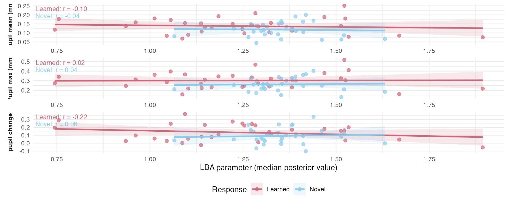
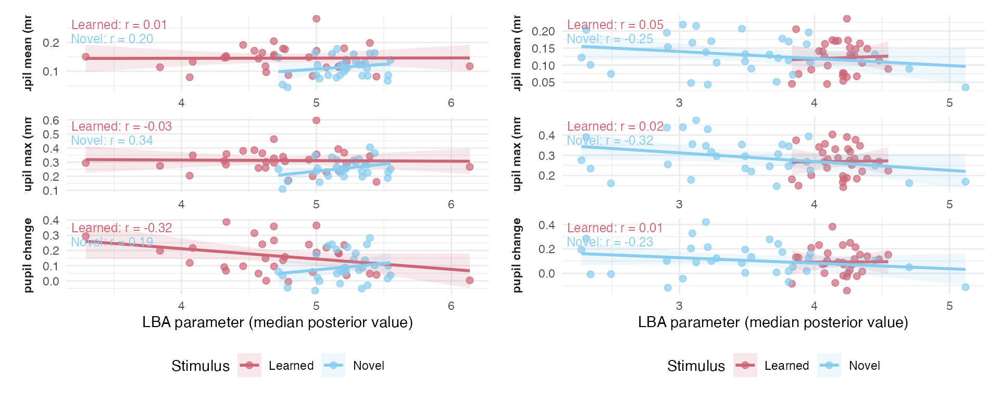
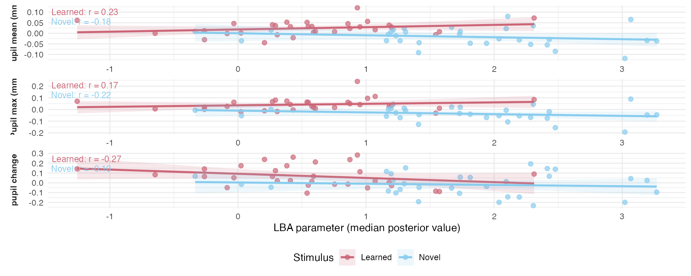
3.5 Bayesian plausible value correlational analysis
To estimate the uncertainty linked to the relationships between LBA estimated parameters and the different pupil metrics, we used a Bayesian plausible value correlational analysis. Like described above (see Methods), instead of using a single point estimate to assess the strength of the relationship between our variables of interest, the posterior distribution of the LBA parameters allows us to use the entire sampling distribution to do it. We calculated the Person’s r between each sample value from our posterior distribution for each parameter of each subject and their subject-level pupil metrics. The posterior distributions of parameters plausible correlation values are shown in Figure 6. For both threshold and drift rate, we evaluated the 95% CI of the distributions. If the 95% CI of the distribution does not include 0, we would be confident in the existence of a relationship between these parameters and the associated pupil size metrics Table 5 provides a summary of these distributions.
Threshold: For the response threshold, the only credible association involved the rate of pupil change. Participants with higher thresholds for “learned” responses showed a lower rate of pupil change on trials where they responded “learned” (median r = −0.20, 95% QI [−0.34, −0.05]). Pupil mean (r = −0.09, 95% QI [−0.23, 0.05]) and peak pupil size (r = 0.02, 95% QI [−0.13, 0.16]) on these trials were not credibly related to the learned-response threshold. For “novel” responses, none of the pupil metrics were credibly associated with the threshold: the 95% QIs included zero for pupil mean (r = −0.03, [−0.23, 0.16]), peak (r = 0.03, [−0.17, 0.22]), and rate of change (r = 0.06, [−0.13, 0.22]). Taken together, the threshold–pupil relationship was confined to learned responses and to the dynamics of the pupil response, not its overall size.
Drift rate: The difference in drift rate between correct and incorrect accumulators, an index of how well evidence discriminates the correct response, was related to the corresponding correct − incorrect difference in pupil metrics. The direction of this relationship depended on stimulus familiarity. For learned faces, participants with a larger drift rate advantage for the correct response showed a larger correct − incorrect difference in mean pupil size (r = 0.20, 95% QI [0.01, 0.37]), and a smaller correct − incorrect difference in the rate of pupil change (r = −0.24, 95% QI [−0.41, −0.06]). The association with peak pupil size was in the same direction as for the mean but not credible (r = 0.15, 95% QI [−0.05, 0.34]). For novel faces, the pattern reversed. A larger drift rate advantage was associated with a smaller correct − incorrect difference in both mean pupil size (r = −0.17, 95% QI [−0.32, −0.01]) and peak pupil size (r = −0.20, 95% QI [−0.35, −0.04]). The rate of pupil change was not credibly related (r = −0.09, 95% QI [−0.24, 0.08]). Thus, better evidence discrimination went with relatively larger pupil responses on correct trials for learned faces, but relatively smaller ones for novel faces.
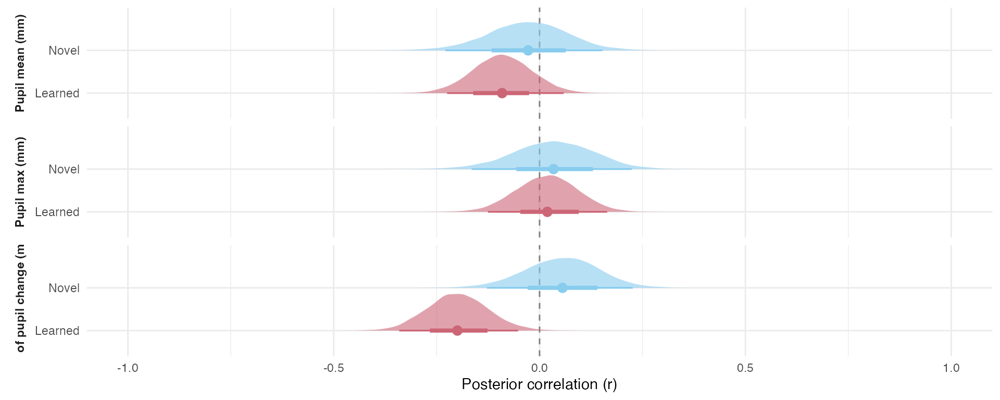
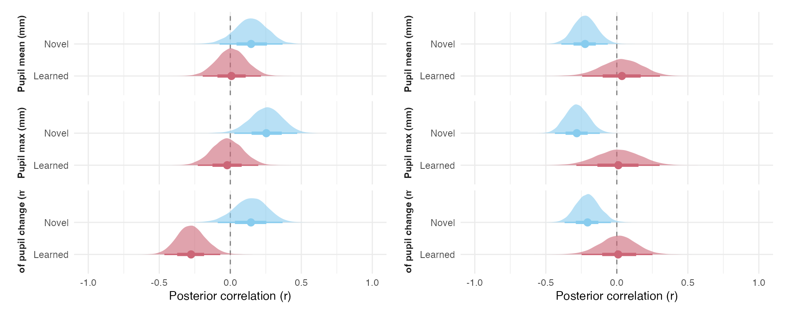
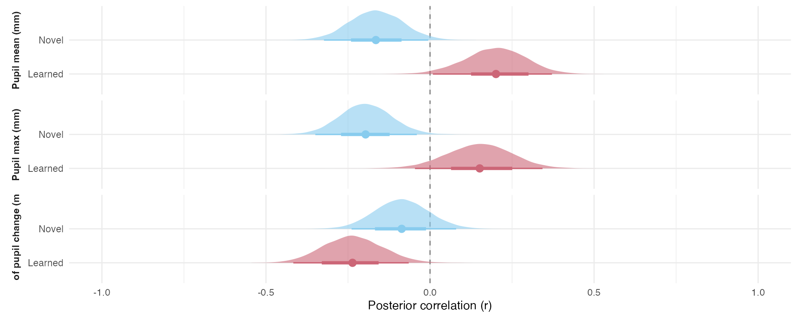
| Pupil mean | Pupil max | Pupil change rate | ||||||
|---|---|---|---|---|---|---|---|---|
| Parameter | Condition | Accuracy | Median r | 95% QI | Median r | 95% QI | Median r | 95% QI |
| Note. Blue = 95% QI entirely above zero; red = 95% QI entirely below zero. | ||||||||
| Threshold | Learned | - | -0.09 | [-0.23, 0.05] | 0.02 | [-0.13, 0.16] | -0.20 | [-0.34, -0.05] |
| Threshold | Novel | - | -0.03 | [-0.23, 0.16] | 0.03 | [-0.17, 0.22] | 0.06 | [-0.13, 0.22] |
| Drift | Learned | TRUE | 0.01 | [-0.20, 0.21] | -0.02 | [-0.23, 0.19] | -0.28 | [-0.46, -0.07] |
| Drift | Learned | FALSE | 0.04 | [-0.25, 0.30] | 0.01 | [-0.29, 0.30] | 0.01 | [-0.25, 0.25] |
| Drift | Learned | TRUE-FALSE | 0.20 | [0.01, 0.37] | 0.15 | [-0.05, 0.34] | -0.24 | [-0.41, -0.06] |
| Drift | Novel | TRUE | 0.15 | [-0.09, 0.36] | 0.25 | [0.02, 0.46] | 0.15 | [-0.10, 0.36] |
| Drift | Novel | FALSE | -0.22 | [-0.38, -0.06] | -0.28 | [-0.43, -0.12] | -0.21 | [-0.37, -0.04] |
| Drift | Novel | TRUE-FALSE | -0.17 | [-0.32, -0.01] | -0.20 | [-0.35, -0.04] | -0.09 | [-0.24, 0.08] |
3.6 Joint model
Here are shown the blablab
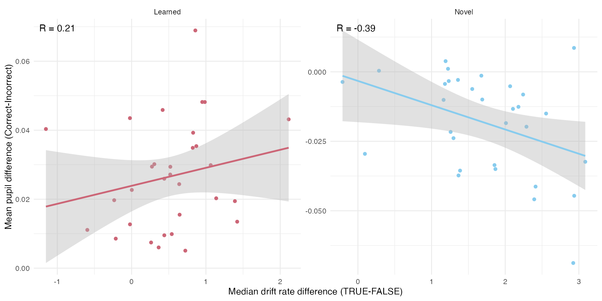
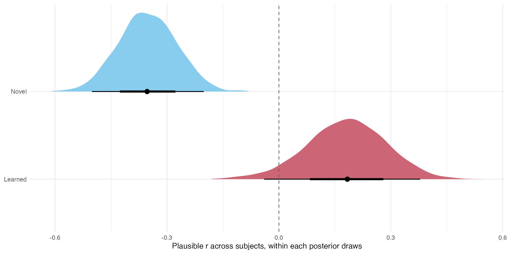
4 Discussion
Paragraph 1:
Paragraph 2: Paragraph 3: Paragraph 4: Paragraph 5: Paragraph 6:
Binda, Paola, Maria Pereverzeva, and Scott O. Murray. 2014. “Pupil Size Reflects the Focus of Feature-Based Attention.” Journal of Neurophysiology 112 (12): 3046–52. https://doi.org/10.1152/jn.00502.2014.
Bradley, Margaret M., Laura Miccoli, Miguel A. Escrig, and Peter J. Lang. 2008. “The Pupil as a Measure of Emotional Arousal and Autonomic Activation.” Psychophysiology 45 (4): 602–7. https://doi.org/10.1111/j.1469-8986.2008.00654.x.
Brocher, Andreas, and Tim Graf. 2016. “Pupil Old/New Effects Reflect Stimulus Encoding and Decoding in Short-Term Memory.” Psychophysiology 53 (12): 1823–36. https://doi.org/10.1111/psyp.12770.
Brown, Scott D., and Andrew Heathcote. 2008. “The Simplest Complete Model of Choice Response Time: Linear Ballistic Accumulation.” Cognitive Psychology 57 (3): 153–78. https://doi.org/10.1016/j.cogpsych.2007.12.002.
Cavanagh, James F., Thomas V. Wiecki, Angad Kochar, and Michael J. Frank. 2014. “Eye Tracking and Pupillometry Are Indicators of Dissociable Latent Decision Processes.” Journal of Experimental Psychology: General 143 (4): 1476–88. https://doi.org/10.1037/a0035813.
Chen, Ivory Y., Sebastiaan Mathôt, and Elkan G. Akyürek. 2026. “Subtle Gaze and Pupil Dynamics: Detecting Recognition of Familiar Faces with Moving Serial Visual Presentation.” Journal of Cognition 9 (1): 20. https://doi.org/10.5334/joc.492.
Cronin, Sophie L., Ottmar V. Lipp, and Welber Marinovic. 2023. “Pupil Dilation During Encoding, but Not Type of Auditory Stimulation, Predicts Recognition Success in Face Memory.” Biological Psychology 178: 108547. https://doi.org/10.1016/j.biopsycho.2023.108547.
Cumming, Geoff. 2014. “The New Statistics: Why and How.” Psychological Science 25 (1): 7–29. https://doi.org/10.1177/0956797613504966.
DeBruine, Lisa M. 2022. webmorphR : Reproducible Stimuli. Zenodo. https://doi.org/10.5281/zenodo.6570965.
Donkin, Chris, Lee Averell, Scott Brown, and Andrew Heathcote. 2009. “Getting More from Accuracy and Response Time Data: Methods for Fitting the Linear Ballistic Accumulator.” Behavior Research Methods 41 (4): 1095–110. https://doi.org/10.3758/BRM.41.4.1095.
Elphick, Camilla E. J., Graham E. Pike, and Graham J. Hole. 2020. “You Can Believe Your Eyes: Measuring Implicit Recognition in a Lineup with Pupillometry.” Psychology, Crime & Law 26 (1): 67–92. https://doi.org/10.1080/1068316X.2019.1634196.
Fournier, Raphaël, Paul Downing, and Richard Ramsey. 2026. “How Does Familiarity Impact the Computational Processes That Support Face Recognition?” PsyArXiv, ahead of print, August. https://doi.org/10.31234/osf.io/854t9_v1.
Gee, Jan Willem de, Olympia Colizoli, Niels A. Kloosterman, Tomas Knapen, Sander Nieuwenhuis, and Tobias H. Donner. 2017. “Dynamic Modulation of Decision Biases by Brainstem Arousal Systems.” eLife 6: e23232. https://doi.org/10.7554/eLife.23232.
Gee, Jan Willem de, Tomas Knapen, and Tobias H. Donner. 2014. “Decision-Related Pupil Dilation Reflects Upcoming Choice and Individual Bias.” Proceedings of the National Academy of Sciences 111 (5): E618–25. https://doi.org/10.1073/pnas.1317557111.
Gee, Jan Willem de, Konstantinos Tsetsos, Lars Schwabe, et al. 2020. “Pupil-Linked Phasic Arousal Predicts a Reduction of Choice Bias Across Species and Decision Domains.” eLife 9: e54014. https://doi.org/10.7554/eLife.54014.
Goldinger, Stephen D., Yi He, and Megan H. Papesh. 2009. “Deficits in Cross-Race Face Learning: Insights from Eye Movements and Pupillometry.” Journal of Experimental Psychology: Learning, Memory, and Cognition 35 (5): 1105–22. https://doi.org/10.1037/a0016548.
Goldinger, Stephen D., and Megan H. Papesh. 2012. “Pupil Dilation Reflects the Creation and Retrieval of Memories.” Current Directions in Psychological Science 21 (2): 90–95. https://doi.org/10.1177/0963721412436811.
Heaver, Becky, and Sam B. Hutton. 2011. “Keeping an Eye on the Truth? Pupil Size Changes Associated with Recognition Memory.” Memory 19 (4): 398–405. https://doi.org/10.1080/09658211.2011.575788.
Kafkas, Alexandros, and Daniela Montaldi. 2015. “The Pupillary Response Discriminates Between Subjective and Objective Familiarity and Novelty.” Psychophysiology 52 (9): 1305–16. https://doi.org/10.1111/psyp.12471.
Kruschke, John K., and Torrin M. Liddell. 2018. “Bayesian Data Analysis for Newcomers.” Psychonomic Bulletin & Review 25 (1): 155–77. https://doi.org/10.3758/s13423-017-1272-1.
Lapteva, Alexandra, and Corinna S. Martarelli. 2024. “Pupil Old/New Effect as an Objective Measure of Recognition Memory: A Meta-Analysis of 17 Eye-Tracking Experiments.” Memory 32 (9): 1211–26. https://doi.org/10.1080/09658211.2024.2395367.
Lewandowsky, Stephan, and Klaus Oberauer. 2018. “Computational Modeling in Cognition and Cognitive Neuroscience.” In Stevens’ Handbook of Experimental Psychology and Cognitive Neuroscience, 1st ed., edited by John T. Wixted. Wiley. https://doi.org/10.1002/9781119170174.epcn501.
Ly, Alexander, Udo Boehm, Andrew Heathcote, et al. 2017. “A Flexible and Efficient Hierarchical Bayesian Approach to the Exploration of Individual Differences in Cognitive‐model‐based Neuroscience.” In Computational Models of Brain and Behavior, 1st ed., edited by Ahmed A. Moustafa. Wiley. https://doi.org/10.1002/9781119159193.ch34.
Mathôt, Sebastiaan, and Ana Vilotijević. 2022. “Methods in Cognitive Pupillometry: Design, Preprocessing, and Statistical Analysis.” Behavior Research Methods 55 (6): 3055–77. https://doi.org/10.3758/s13428-022-01957-7.
Matyjek, Magdalena, Mareike Bayer, and Isabel Dziobek. 2021. “Pupillary Responses to Faces Are Modulated by Familiarity and Rewarding Context.” Brain Sciences 11 (6): 794. https://doi.org/10.3390/brainsci11060794.
Matzke, Dora, Alexander Ly, Ravi Selker, et al. 2017. “Bayesian Inference for Correlations in the Presence of Measurement Error and Estimation Uncertainty.” Collabra: Psychology 3 (1): 25. https://doi.org/10.1525/collabra.78.
McElreath, Richard. 2018. Statistical Rethinking: A Bayesian Course with Examples in R and Stan. Chapman; Hall/CRC. https://doi.org/10.1201/9781315372495.
Mejía, Manuel Alejandro, Mitchell Valdés-Sosa, and Maria Antonieta Bobes. 2024. “Pupil Dilation Reflects Covert Familiar Face Recognition Under Interocular Suppression.” Consciousness and Cognition 123: 103726. https://doi.org/10.1016/j.concog.2024.103726.
Mill, Ravi D., Akira R. O’Connor, and Ian G. Dobbins. 2016. “Pupil Dilation During Recognition Memory: Isolating Unexpected Recognition from Judgment Uncertainty.” Cognition 154: 81–94. https://doi.org/10.1016/j.cognition.2016.05.014.
Montefinese, Maria, Ettore Ambrosini, Beth Fairfield, and Nicola Mammarella. 2013. “The ‘Subjective’ Pupil Old/New Effect: Is the Truth Plain to See?” International Journal of Psychophysiology 89 (1): 48–56. https://doi.org/10.1016/j.ijpsycho.2013.05.001.
Murphy, Peter R., Evert Boonstra, and Sander Nieuwenhuis. 2016. “Global Gain Modulation Generates Time-Dependent Urgency During Perceptual Choice in Humans.” Nature Communications 7: 13526. https://doi.org/10.1038/ncomms13526.
Murphy, Peter R., Joachim Vandekerckhove, and Sander Nieuwenhuis. 2014. “Pupil-Linked Arousal Determines Variability in Perceptual Decision Making.” PLOS Computational Biology 10 (9): e1003854. https://doi.org/10.1371/journal.pcbi.1003854.
Naber, Marnix, George A. Alvarez, and Ken Nakayama. 2013. “Tracking the Allocation of Attention Using Human Pupillary Oscillations.” Frontiers in Psychology 4: 919. https://doi.org/10.3389/fpsyg.2013.00919.
Nunez, Michael D., Kiante Fernandez, Ramesh Srinivasan, and Joachim Vandekerckhove. 2024. “A Tutorial on Fitting Joint Models of M/EEG and Behavior to Understand Cognition.” Behavior Research Methods, ahead of print. https://doi.org/10.3758/s13428-023-02331-x.
Otero, Sian C., Brendan S. Weekes, and Samuel B. Hutton. 2011. “Pupil Size Changes During Recognition Memory.” Psychophysiology 48 (10): 1346–53. https://doi.org/10.1111/j.1469-8986.2011.01217.x.
Ratcliff, Roger. 1978. “A Theory of Memory Retrieval.” Psychological Review 85 (2): 59–108. https://doi.org/10.1037/0033-295X.85.2.59.
Ratcliff, Roger, Anjali Thapar, and Gail McKoon. 2004. “A Diffusion Model Analysis of the Effects of Aging on Recognition Memory.” Journal of Memory and Language 50 (4): 408–24. https://doi.org/10.1016/j.jml.2003.11.002.
Rij, Jacolien van, Petra Hendriks, Hedderik van Rijn, R. Harald Baayen, and Simon N. Wood. 2019. “Analyzing the Time Course of Pupillometric Data.” Trends in Hearing 23: 2331216519832483. https://doi.org/10.1177/2331216519832483.
Schwetlick, Lisa, Hendrik Graupner, Olaf Dimigen, and Ralf Engbert. 2025. “Distinctive Pupil and Microsaccade-Rate Signatures in Self-Recognition.” Journal of Vision 25 (4): 16, 1–15. https://doi.org/10.1167/jov.25.4.16.
Simons, Daniel, Yuichi Shoda, and D. Lindsay. 2017. “Constraints on Generality (COG): A Proposed Addition to All Empirical Papers.” Perspectives on Psychological Science 12 (August): 174569161770863. https://doi.org/10.1177/1745691617708630.
Stevenson, Niek, Michelle Donzallaz, Andrew Heathcote, and Steven Miletić. 2026. EMC2: Bayesian Hierarchical Analysis of Cognitive Models of Choice. https://doi.org/10.32614/CRAN.package.EMC2.
Taikh, Alexander, and Glen E. Bodner. 2022. “Pupil Dilation During Recognition Reflects the Subjective Recollection/Familiarity Experience at Test Rather Than the Level of Processing at Encoding.” Canadian Journal of Experimental Psychology / Revue Canadienne de Psychologie Expérimentale 76 (3): 186–92. https://doi.org/10.1037/cep0000283.
Turner, Brandon M., Birte U. Forstmann, Bradley C. Love, Thomas J. Palmeri, and Leendert Van Maanen. 2017. “Approaches to Analysis in Model-Based Cognitive Neuroscience.” Journal of Mathematical Psychology 76 (B): 65–79. https://doi.org/10.1016/j.jmp.2016.01.001.
Turner, Brandon M., Birte U. Forstmann, and Mark Steyvers. 2019. Joint Models of Neural and Behavioral Data. Computational Approaches to Cognition and Perception. Springer International Publishing. https://doi.org/10.1007/978-3-030-03688-1.
Turner, Brandon M., Birte U. Forstmann, Eric-Jan Wagenmakers, Scott D. Brown, Per B. Sederberg, and Mark Steyvers. 2013. “A Bayesian Framework for Simultaneously Modeling Neural and Behavioral Data.” NeuroImage 72: 193–206. https://doi.org/10.1016/j.neuroimage.2013.01.048.
Turner, Brandon M., Leendert van Maanen, and Birte U. Forstmann. 2015. “Informing Cognitive Abstractions Through Neuroimaging: The Neural Drift Diffusion Model.” Psychological Review 122 (2): 312–36. https://doi.org/10.1037/a0038894.
Urai, Anne E., Anke Braun, and Tobias H. Donner. 2017. “Pupil-Linked Arousal Is Driven by Decision Uncertainty and Alters Serial Choice Bias.” Nature Communications 8: 14637. https://doi.org/10.1038/ncomms14637.
Võ, Melissa L.-H., Arthur M. Jacobs, Lars Kuchinke, et al. 2008. “The Coupling of Emotion and Cognition in the Eye: Introducing the Pupil Old/New Effect.” Psychophysiology 45 (1): 130–40. https://doi.org/10.1111/j.1469-8986.2007.00606.x.
Wang, Chin-An, and Douglas P. Munoz. 2015. “A Circuit for Pupil Orienting Responses: Implications for Cognitive Modulation of Pupil Size.” Current Opinion in Neurobiology 33: 134–40. https://doi.org/10.1016/j.conb.2015.03.018.
Wu, Esther Xiu Wen, Bruno Laeng, and Svein Magnussen. 2012. “Through the Eyes of the Own-Race Bias: Eye-Tracking and Pupillometry During Face Recognition.” Social Neuroscience 7 (2): 202–16. https://doi.org/10.1080/17470919.2011.596946.